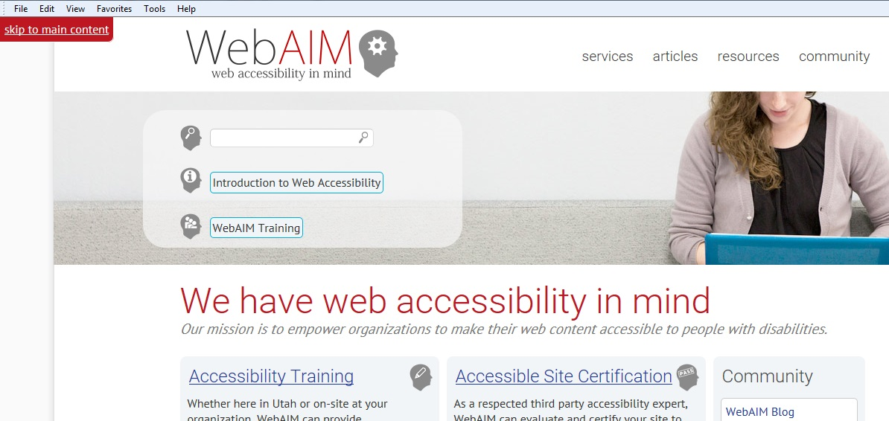
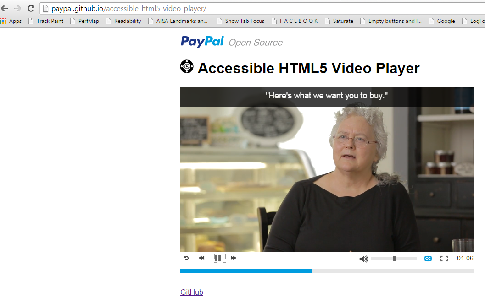

Accessibility world needs open source and vice versa
-
PWD Need better software
-
More inaccessible libraries with growth of Opensource (NodeJS, gitHub etc.)
More info : Article on why open source needs Accessibility standards
-
Currently there is a very small number of like minded people who contribute.. Need more...
Innovate-Adapt-Evolve
A walk-through of our Innovation Journey:
- Bootstrap Plug-in
- SkipTo Plug-in
- amCharts Plug-in
- Accessible HTML5 Video Player
- AATT (Automated Accessibility Testing Tool)
- Quick Check
Skip Navigation Links
- Are a way to ByBass Blocks of content (WCAG 2.4)
- Without using this link
- Keyboard user needs to tab through approximately 40 links to reach the main story
- Screen reader user have to listen to 200 words
- Screen magnifier user must search around for the location of the main body
Classical Skipto

Has been there for a quiet long time...........
SkipTo Plugin
https://github.com/paypal/skipto
- Replacement for your old classic “Skip to main content” link
- Scans the full page for
- Heading (e.g h1, h2, h3 and h4 elements)
- ARIA landmarks (e.g. banner, navigation, main and search)
- HTML5 Section Elements (e.g. main, section[aria-label], section[aria-labelledby]
- Any element with the id specified via the configuration file.
- Any element with the custom class specified via the configuration file.
- Displays as a nice Menu Button
- Screen Readers announce it as “SkipTo menu Collapsed”
SkipTo Plugin - How to implement
Just add the JavaScript plugin to your HTML file
SkipTo Plugin - How to Configure
Also available as Wordpress and Drupal plugins
Bootstrap Plugin
https://github.com/paypal/bootstrap-accessibility-plugin
Pros
- Makes many of the components of Bootstrap library accessible for keyboard and screen reader users
- Experiment with Bootstrap without having to modify the original code
- Independent of Bootstrap's release timeliness
- Avoid other people having to hack Bootstrap code if they just want to get accessibility features
Cons
- Another JavaScript file and CSS files need to be loaded on the page (but wait! you can Lazy Load)
P.S.
- Bootstrap is just an famous example we picked up
- There are lot more open source projects in the wild wild web which are used in many websites and making it more inaccessible
- S.O.S.
Classical Chart Accessiblty
Problems with usual ways
- Data is duplicated as in Hidden table
- Too much text to describe the Chart
- Only Basic textual information available to Screen reader users
- Lot of maintenance
amCharts accessibility Plugin (Interactivity)
For keyboard users
- Can navigate with Left and Right arrow keys
- Cursor tooltip is shown when the arrow keys are pressed
- Tab key to navigate within chart, left and right sliders
- Applies aria-label, aria-valuemin, aria-valuemax, aria-valuetext and aria-valuenow for left and right sliders
amCharts accessibility Plugin
For Screen Readers
- Applies role of Application to the chart
- Creates a hidden status Div to announce the Tooltips displayed
- Announces the slider and the value selected using slider
amCharts accessibility Plugin - Demo
Accessible HTML5 Video Player
https://github.com/paypal/accessible-html5-video-player
- Supports VTT caption file
- Uses native HTML5 form controls for volume (range input) and progress indication (progress element).
- Accessible to keyboard-only users and screen reader users.
- Option to set captions on or off
- Option to set number of seconds to rewind and forward.
- width adjusts to width of video element.
- Written in "vanilla" JavaScript.
Accessible HTML5 Video Player

Demo
Automated Accessibility Testing Tool (AATT)
https://github.com/paypal/AATT
To find out Frequent Accessibility Errors
- Missing alt attributes for images
- Missing explicit relationships between form fields and their labels
- Tables without headers or without explicit relationships between header cells and data cells
- Use of deprecated, presentational elements and attributes
- Events bound to items that are not discoverable via keyboard
- Poor color contrast
- Blank link text
AATT - How it Works?
- NodeJS + Phantom JS (headless WebKit browser) +Selenium Webdriver
- Serves as an API which accepts html "source" and returns back errors
- Integrates easily with your existing testing framework, we did it with Java testing framework as well as with NemoJS written on NodeJS
- Since served locally within corp network, code is secure
AATT - How it Works?
- "source" to send the HTML source of the page. Can be a whole page or partial page source
- "priority" to fetch reqults based on issue priorities like P1, P2, Pr or P4. It is a comma-separated value. Eg P1,P2,P3,P4
- "ouput" to get the jsonified string. E.g. output=json. Default to string with table data